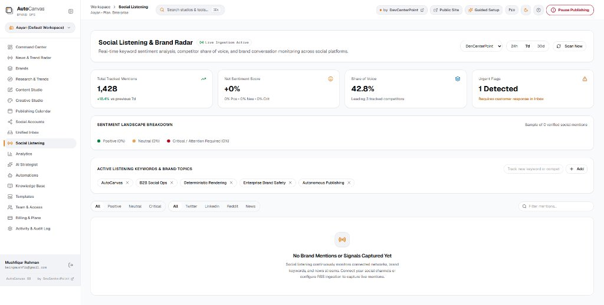

AUTOCANVAS OS v2.0 • LIVE PARITY
INTELLIGENT CONTENT RESEARCH
Never run out of
relevant ideas.
Real-time industry radar detects trending topics, evaluates competitor sentiment, and crafts strategic angles before trends peak.
✓
Hourly News Monitoring & Topic Ingestion
✓
1-Click Campaign Angle & Hook Generator
✓
Guaranteed Duplicate Post Prevention
autocanvas.devcenterpoint.com/workspace/research-trends
